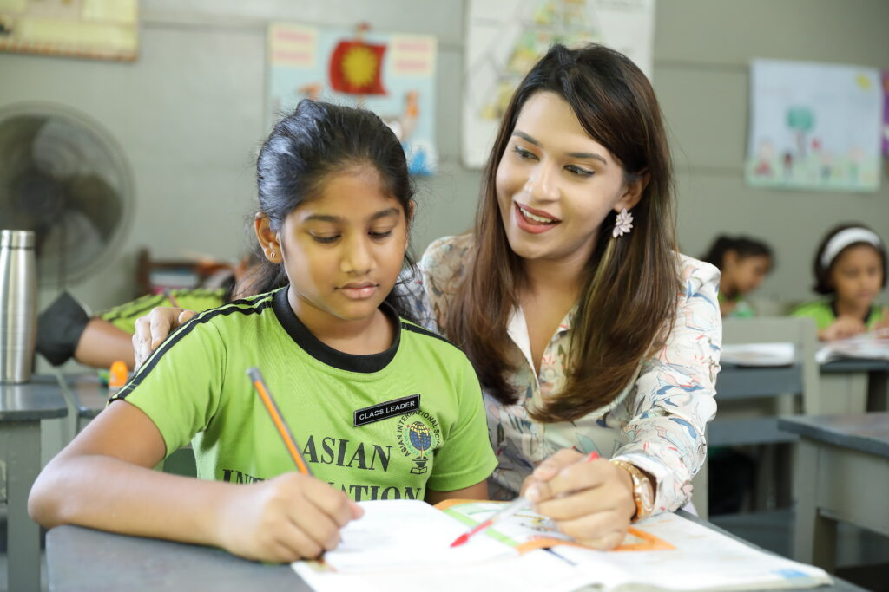
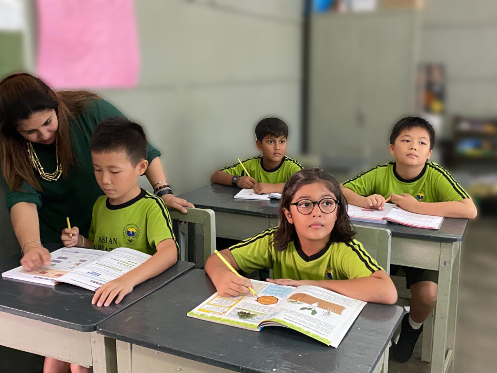

The Junior School comprises of students ranging from the ages of 7 ½ to 10 ½ in Years 3, 4, 5 and 6. Its objective is to enable the child to realise his or her potential as a unique individual and to develop cognitive, social and emotional skills in order to interact harmoniously with his/her peers and adults in the community. Our students build upon the strong foundation laid in Elementary School, and develop skills essential for a 21st century learner. Communication, creativity, problem – solving, critical thinking, collaboration etc are encouraged and achieved through carefully planned teaching methods.
AIS adheres to the British National Curriculum, and our teachers are qualified and trained to deliver informative and engaging lessons which encourage a child's love for learning. Every class is equipped with a Smartboard which helps teachers present visually stimulating lessons, specially with subjects such as Geography, History, Science, and Global Citizenship Education.
Our curriculum centres around the holistic development of the child. We encourage children to explore and enjoy subjects such as Art, Music and Dancing. PE and Swimming are compulsory in the Junior School and aimed at strengthening the child physically whilst focusing on collaborative and team building skills. We also offer many co-curricular activities such as Chess, Scrabble, Oriental Dancing, Contemporary Dancing, Choir, Community Service, and Little Friends. These help students extend their circle of friends, improve their talent, and build leadership skills.
Our success lies in the strong belief that children must enjoy school and feel safe and secure in order to thrive in their learning.

Curious minds, creative lessons and lasting friendships.
Enrol your child in a school where learning is a joy and every child is nurtured.
Admissions Contact Us
{kind=link}
{kind=link}